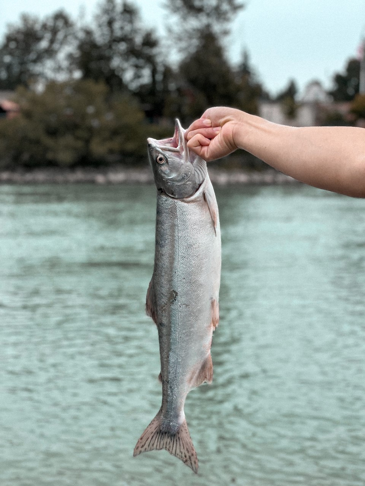

Salmonids
There are seven species of fishes that all belong to the Salmonid family. Five Pacific salmon and two trout—inhabit the rivers and streams of the Pacific Northwest. Although these fish share certain fundamental characteristics, the differences among them are numerous, both in behavioral traits and in appearance, as is evident from this rendition of spawning males. Up until now, I have only caught three out of the seven, which are Coho, Chinook and Pink salmon.
Chinook Salmon Pink Salmon